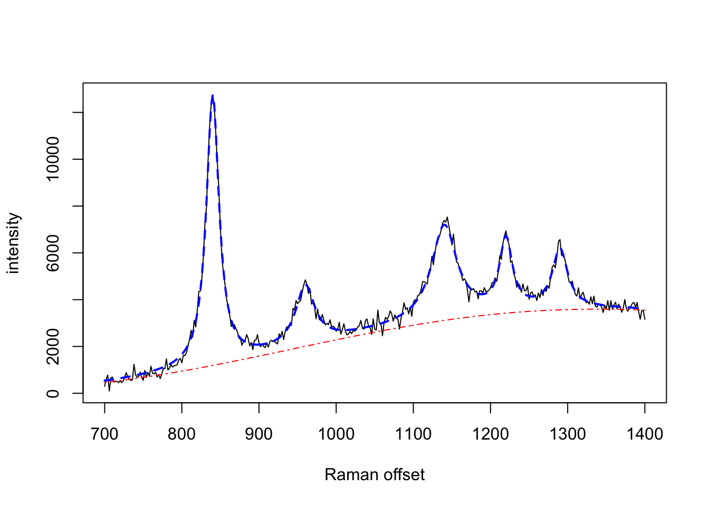
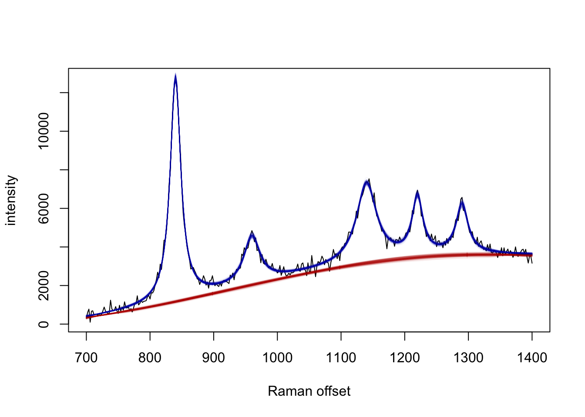

serrsBayes provides model-based quantification of surface-enhanced resonance Raman spectroscopy (SERRS) using sequential Monte Carlo (SMC) algorithms. The details of the Bayesian model and informative priors are provided in the arXiv preprint, Moores et al. (2016; v2 2018) “Bayesian modelling and quantification of Raman spectroscopy.” Development of this software was supported by the UK Engineering & Physical Sciences Research Council (EPSRC) programme grant “In Situ Nanoparticle Assemblies for Healthcare Diagnostics and Therapy” (ref: EP/L014165/1).
Installation Instructions
Stable releases, including binary packages for Windows & Mac OS, are available from CRAN:
install.packages("serrsBayes")The current development version can be installed from GitHub:
devtools::install_github("mooresm/serrsBayes")Example Usage
To simulate a synthetic Raman spectrum with known parameters:
set.seed(1234)
library(serrsBayes)
wavenumbers <- seq(700,1400,by=2)
spectra <- matrix(nrow=1, ncol=length(wavenumbers))
peakLocations <- c(840, 960, 1140, 1220, 1290)
peakAmplitude <- c(11500, 2500, 4000, 3000, 2500)
peakScale <- c(10, 15, 20, 10, 12)
signature <- weightedLorentzian(peakLocations, peakScale, peakAmplitude, wavenumbers)
baseline <- 1000*cos(wavenumbers/200) + 2*wavenumbers
spectra[1,] <- signature + baseline + rnorm(length(wavenumbers),0,200)
plot(wavenumbers, spectra[1,], type='l', xlab="Raman offset", ylab="intensity")
lines(wavenumbers, baseline, col=2, lty=4)
lines(wavenumbers, baseline + signature, col=4, lty=2, lwd=2)
Fit the model using SMC:
lPriors <- list(scale.mu=log(11.6) - (0.4^2)/2, scale.sd=0.4, bl.smooth=10^11, bl.knots=50,
beta.mu=5000, beta.sd=5000, noise.sd=200, noise.nu=4)
tm <- system.time(result <- fitSpectraSMC(wavenumbers, spectra, peakLocations, lPriors))Sample 200 particles from the posterior distribution:
print(tm)
#> user system elapsed
#> 528.304 8.969 162.281
samp.idx <- sample.int(length(result$weights), 200, prob=result$weights)
plot(wavenumbers, spectra[1,], type='l', xlab="Raman offset", ylab="intensity")
for (pt in samp.idx) {
bl.est <- result$basis %*% result$alpha[,1,pt]
lines(wavenumbers, bl.est, col="#C3000009")
lines(wavenumbers, bl.est + result$expFn[pt,], col="#0000C309")
}